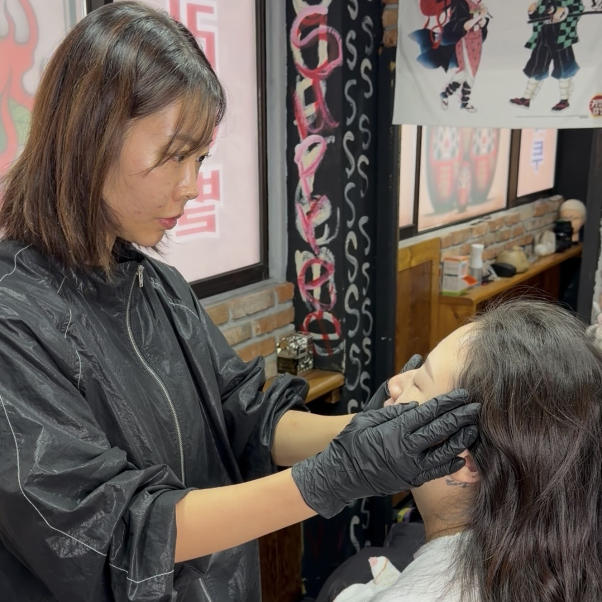
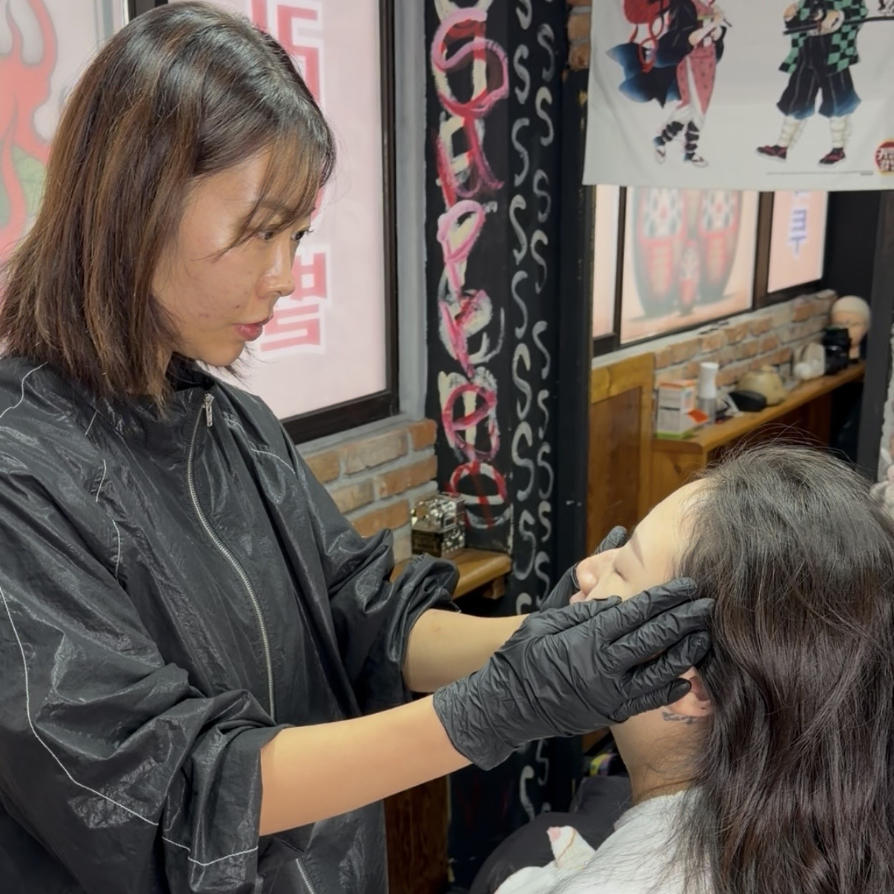
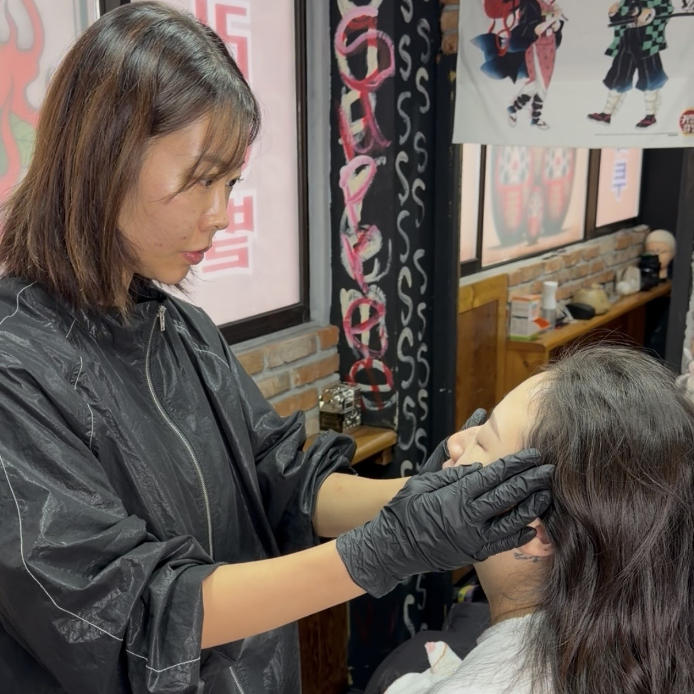

한 분 한 분, 충분히
많은 분을 빠르게 받기보다,
한 분에게 충분한 시간을 쓰는 방식을 선택했습니다.
자연결은 '손기술'만이 아니라
상담과 디테일에서 완성된다고 믿습니다.

 

자연눈썹을 하고 싶긴 한데,
어디를 기준으로 골라야 할지 헷갈리셨을 거예요.
받으면 괜찮은 것 같다가도
집에 와서 보면 뭔가 아쉬웠던 경험, 한 번쯤 있으시죠.
그래서 "이번엔 신중하게 하고 싶다"는 생각이 들 때,
상담부터 충분한 곳이 필요하다고 생각했습니다.
생활습관 / 화장 스타일 / 이전 경험까지 먼저 확인해요.
"어떤 느낌을 원하시는지"를 말로 정리해드립니다.
유행 눈썹이 아니라, 얼굴형과 인상을 기준으로 잡아요.
"자연스러움"의 기준을 함께 맞춥니다.
상담 후 마음에 들지 않으면 시술은 진행하지 않습니다.
결정은 고객님이 하셔도 괜찮아요.
많은 분을 빠르게 받기보다,
한 분에게 충분한 시간을 쓰는 방식을 선택했습니다.
자연결은 '손기술'만이 아니라
상담과 디테일에서 완성된다고 믿습니다.

결과는 얼굴형, 기존 눈썹 상태, 피부 타입에 따라 달라질 수 있습니다.
아래 예시는 "티가 확 나게 바뀌는 변화"보다
"자연스럽게 정리되는 변화"에 초점을 둔 사례입니다.
가까이에서 봐도 자연스러운 결 표현을 목표로 합니다.
과한 라인보다, 얼굴에 자연스럽게 어울리는 밀도를 맞춥니다.
10년 차 원장은 아니지만, 한 분 한 분 충분히 시간을 쓰는 방식으로 진행합니다. 빠르게 많이 받기보다, 한 명의 결과에 집중합니다.
상담 후 디자인이 마음에 들지 않으면 시술은 진행하지 않습니다. "일단 해보세요"라고 밀어붙이지 않아요.
유행보다 얼굴 기준으로 제안합니다. 지금의 인상에 가장 자연스럽게 맞는 디자인을 목표로 합니다.
지금은 예약 수량을 넓히기보다,
한 분 한 분 충분한 상담 후 자연눈썹의 기준을 함께 맞춰가는 단계입니다.
인원 제한으로 운영되며, 상담 후 순차적으로 안내드립니다.
상담 후 원치 않으시면 진행하지 않으셔도 됩니다.
상담부터 천천히 받아보세요.
"어울리는 기준"을 함께 잡아드릴게요.